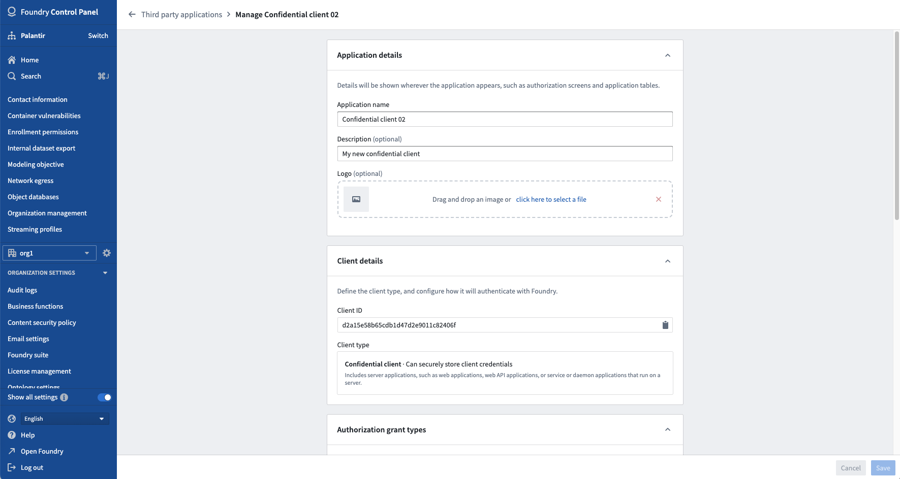
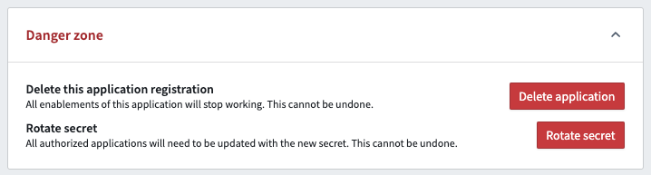

:::callout{theme="warning"} Users should use Developer Console to manage their application configuration. The Control Panel view only applies if Developer Console has not been enabled for the user. :::
You can access the manage application interface by selecting Manage application from the Actions dropdown located to the right of an application in the third-party applications user interface. Here, you can review and edit an applicationâs registration such as its name, description, logo, authorization grant types, and application discovery settings.
:::callout{theme="neutral"} The Manage application interface is only available to permissioned members of the managing Organization for a third-party application.
The organization that the user creates an application in is deemed the managing organization of the application, and anyone in the organization who has the Manage OAuth 2.0 clients permission can manage the third-party application.
The managing Organization can determine which other organizations can see and use the third-party application through the application discovery settings. :::
The following is an example of a Manage application page shown for an example application:

Danger zone actions are located at the bottom of the Manage application page.

To permanently prevent users from authorizing a third-party application, the applicationâs registration can be revoked: that is, deleted from Foundry.
This is considered a âdanger zone actionâ as it is irrevocable and will render the third-party application unusable by all users unless the application is re-registered. If an application is re-registered, users will have to reauthorize the third-party application since Foundry treats the re-registration as a new registration.
Learn how to delete an application's registration from the danger zone actions documentation.